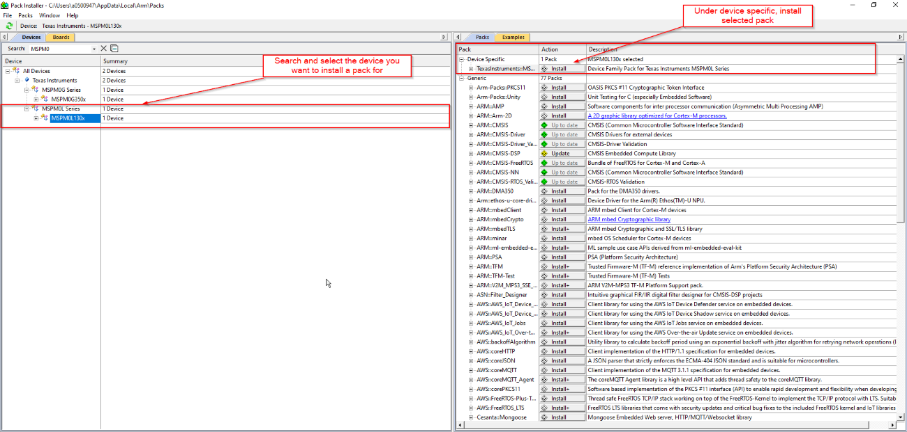
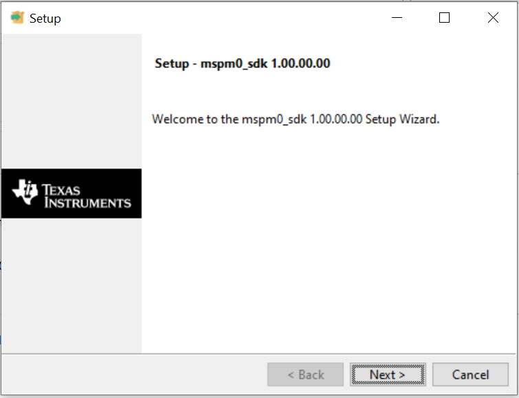
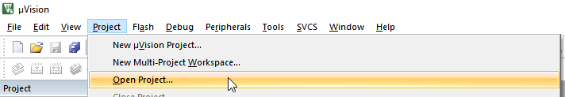
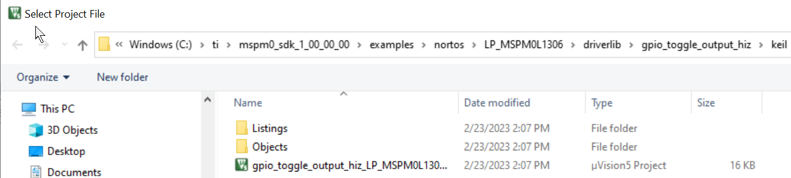
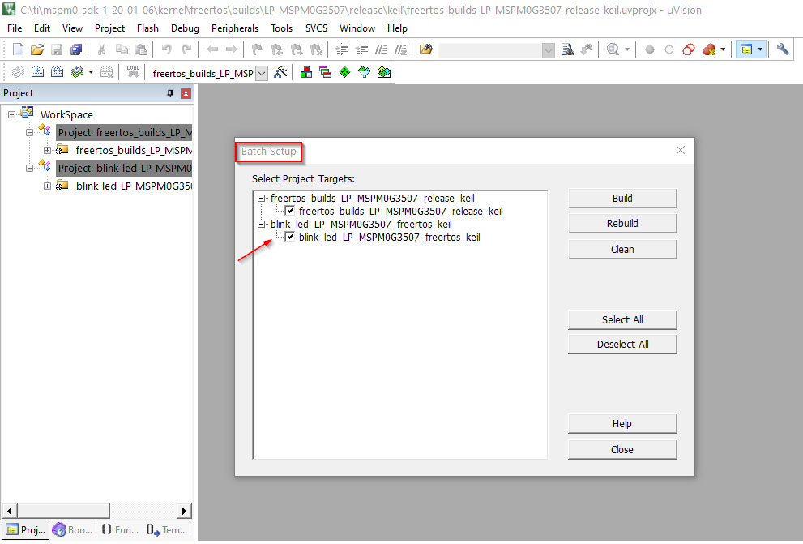
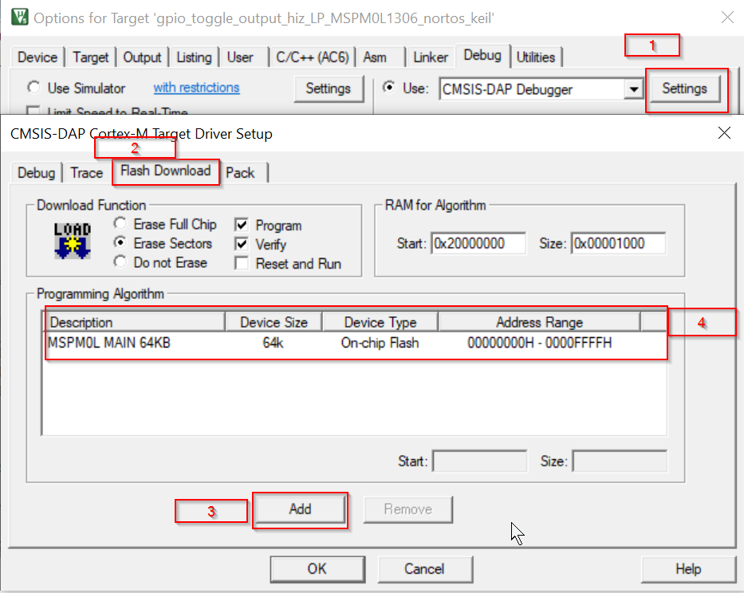
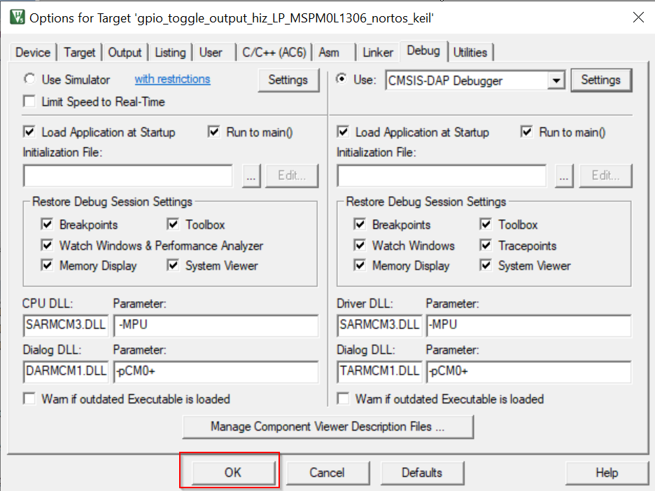
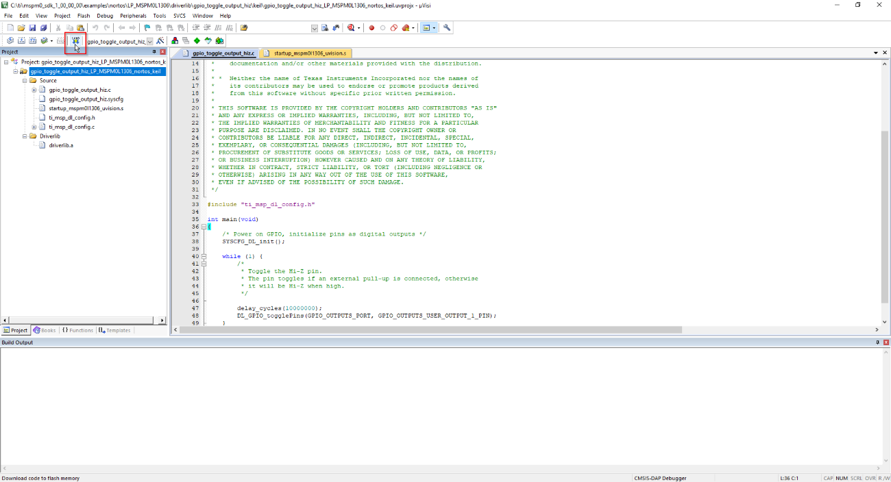
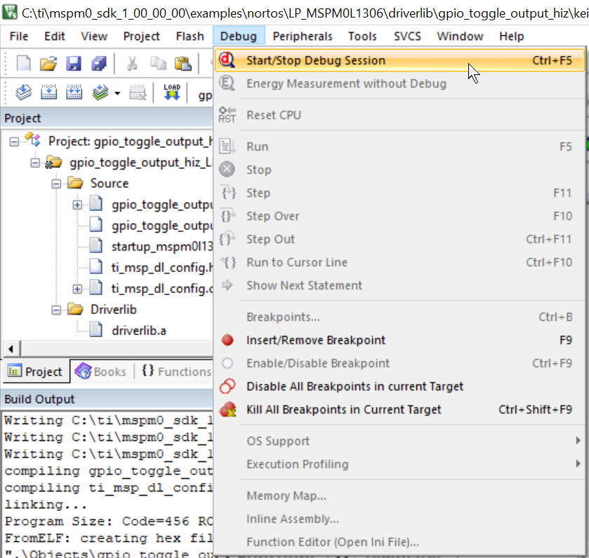

This guide is intended to assist users in the initial setup and demonstration of running their first sample application. The guide explains how to install the MSPM0 SDK and the MSPM0 CMSIS-Pack for Keil, and lists the various other tools required to get started with your first application.
In uVision, select Project → Manage → Pack Installer
In the Pack Installer, select the Texas Instruments devices and select the corresponding MSPM0 family. Then on the right side, install the device specific pack as well as any other pack that may be necessary.

Approve the license terms
The Pack Installer should show suppport for the MSPM0 devices.
Download and install the latest MSPM0 SDK. Note that there are SDK installers for Windows, Linux and MacOS. The steps below are shown in Windows, but a similar approach should be followed in Linux or MacOS.
Execute the installer. Click Next.

Select an Installation Directory and click Next. Note the installation directory which by default is c:\ti which will install the SDK at C:\ti\mspm0_sdk_<version>\. This path will be refered to as <MSPM0_SDK_INSTALL_DIR> in sections below.
The SDK includes a preliminary version of SysConfig metadata which can be used to evaluate the user experience of MSPM0 SDK.
A detailed explanation of the installation and usage of SysConfig with MSPM0 is available at Using SysConfig with MSPM0 available in the SDK’s Tools Guide.
6. Import and Build an SDK Example in Keil uVision¶
In Keil uVision, select Project → Open Project

Navigate to a Keil folder in SDK example at <MSPM0_SDK_INSTALL_DIR>/examples/ and open the .uvprojx project file(Note: For the rtos example, use .uvmpw work space file). For example <MSPM0_SDK_INSTALL_DIR>/examples/nortos/LP_MSPM0L1306/driverlib/gpio_toggle_output_hiz/keil/gpio_toggle_output_hiz.uvprojx.

2.1. The project is ready to build and debug.
To build the FreeRTOS supported example, select Project → Batch Setup, select all the project targets for the build.

3.1. Select Batch Build, it will build all the projects in the workspace.
Keil supports multiple debuggers. This section shows how to use the XDS-110 debugging tool in CMSIS-DAP mode. The XDS-110 is integrated into the MSPM0 LaunchPads.
Go to the options window for the Keil project imported in the previous step by right clicking on the project folder
Go to the debug tab and click on the settings button and make sure the settings match those shown in the image below.
Click on the Flash Download tab and check that description matches that of the image. If not, click on the add button and select the corresponding MSPM0 MAIN option. The device type is On-chip flash.

Click Ok on the bottom of the windows to close out the windows and apply all the changes made to the debug settings

Flash the device with the project by pressing the Load button as shown below

Hover over the debug tab on the main screen and choose start/stop debug session

This will start the debug session.
8. Known Issues and Frequently Asked Questions (FAQs)¶